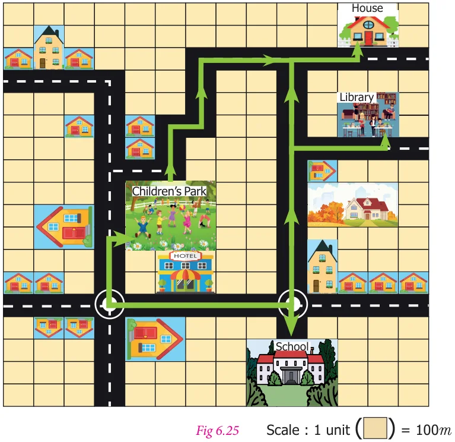
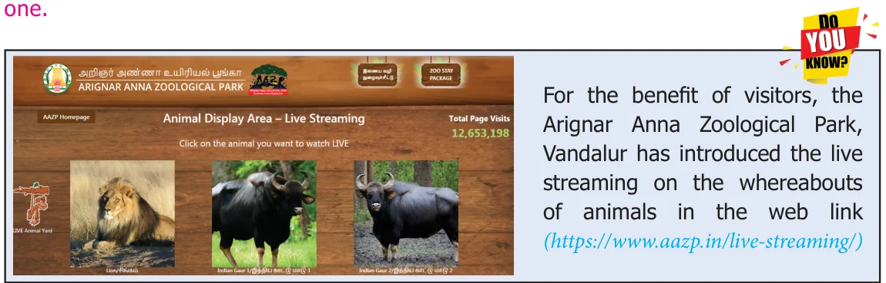
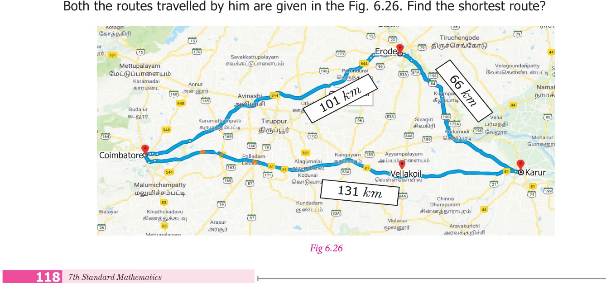
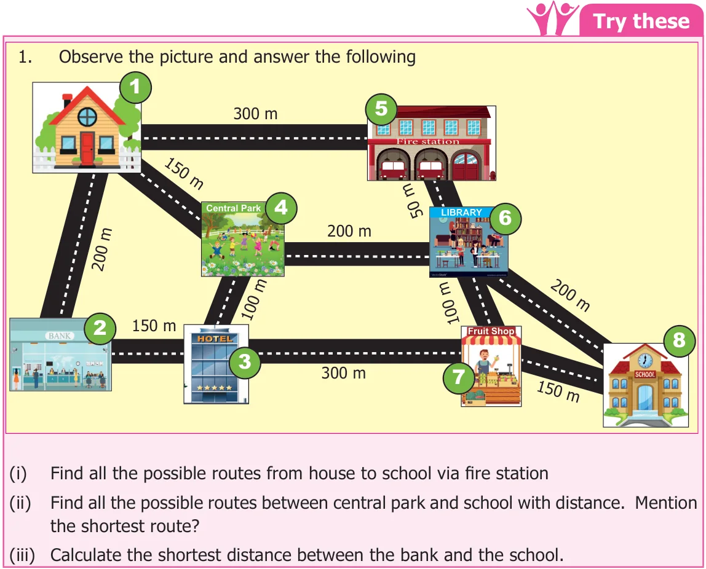
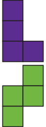

Situation 1
Maps are used to display a wide variety of information. Reading a map can help us to solve many problems in travel such as planning, for travel, place of visit. Let us, learn how to find the shortest possible route in a map.
Fig.6.24
Answer the following questions using The Arignar Anna Zoological Park map :
- To visit the chimpanzee area, from the entrance, one has to go straight and turn towards …………………….. ( Left / Right )
- Choose the right option among the following, which indicates the animals lying West and East of an Elephant.
- Deer Elephant Crocodile (ii) Tiger Elephant Deer
- One can see giraffe only after seeing zebra. Is it true?
- In the given map , list the names of 6 animals that are seen in the zoo
- ........................ 2. ........................ 3. ........................
- ........................ 5. ........................ 6. ........................
- Mention any two animals that are seen in the south side of the zoo.
- The entrance of the zoo is located at ........................ direction of the map.
- List three animals located at eastern side of the map.
The above situation shows how the route map guides one to visit a new place.
Situation 2
This situation familiarizes one to read the road map. In the Fig.6.25 various places like school, park, house, hotel and so on are connected through roads.

Find the distance using the scale.
- Find the distance of the library from the house?
- Find the distance that Chandru travels from school to his house via library?
- Find the distances from the children's park to school and park to house. Which is
the shortest distance?
Solution:
- Library is at the distance of 10 units from the house. Therefore, \(10 \times 100 m = 1000 m (1\) unit \(= 100\) m)
- Distance from school to library is 11 units
Therefore, \(11 \times 100 m = 1100 m (1\) unit \(= 100\) m)
Distance from library to house is 10 units Therefore, \(10 \times 100 m = 1000 m (1\) unit \(= 100\) m) Therefore, Total distance travelled by Chandru \(= 1100+1000 = 2100 m\)
- The distance from the children's park to school is 11 units
Therefore, \(11 \times 100 = 1100 m (1\) unit \(= 100\) m) The distance from the children's park to house is 12 units Therefore, \(12 \times 100 = 1200 m (1\) unit \(= 100\) m) Therefore, Distance from the children's park to school is shorter than the other

6.3.1 To find the "Shortest " route
Often, we face with situations where we have to decide the shortest way of travel from a certain point A to another point B. A route map helps us to choose the way suitable for our purpose or need. Let us see some examples of how we select the shortest route.
Example 6.3
Madhan has to go to Karur from Coimbatore for an official visit. On his onward journey, he goes via Vellakoil to reach Karur. While returning to Coimbatore he travels via Erode.

Solution:
Distance travelled by Madhan from Coimbatore to Karur via Vellakoil \(= 131\) km Distance travelled by Madhan from Karur to Coimbatore via Erode \(= 66 + 101 = 167\) km Therefore, the route via Vellakoil is the shortest route.
Example 6.4
A telephone exchange worker wants to give the telephone connection to Amutha's house. Fig.6.27 shows all the possibilities of cable connections. Find the route which requires minimum cable?
Distance from A to \(D =7 m\) Distance from A to D (via B) \(= 4+5 = 9 m\) Distance from A to D (via C) \(= 2+6 = 8 m\)
the route directly from A to D requires minimum cable of length 7 m.

- A school has planned for a trip to Ooty. Using the route map, the school decides to visit the places such as Boat House, Adam Founatian and Botanical Garden.
- How much distance you have to travel to Botanical Garden from Ooty Boat House?
- Find the shortest route to Botanical from the Ooty Main Bus Stand.
- Mention the direction of Botanical Garden from Adams Fountain.
- In what direction, Ooty Boat House is situated from Ooty Main Bus Stand.
- Complete the following route map from Ooty Main Bus Stand to Botanical Garden.
Botanical Garden
Ooty
Main Bus Encourage students to plan for a trip to Stand some more places using map.

- Make a model of a fish using the given tetromino shapes.
